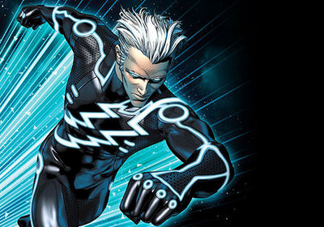

Hello, my name is George Lu and I am the fastest boy alive. I use my powers to save people, finish my homework fast, and be on time for school. Recently I developed a disease that interferes with my powers, so now I have absolutely no powers at all. My grades have not been as high, and I am always late for school. I hope I get better, but let us go back to the very beginning when this all began.
It goes back to 2015, on rainy day. I was walking home after swim practice from school when it started to rain. I kept walking because I didn't mind the light rain, but after a couple of minutes it was pouring buckets so I had to take cover under a tree to avoid getting all wet. The sound of thunder boomed overhead, I knew that lightning was going to come after, I also knew that I shouldn't have stood under a tree but it was too late. At that precise moment a bolt of lightning hit splitting the tree and electrocuting me with more than 500,000 volts. I woke up in the hospital, I don't know how I survived but I was glad to be alive. 2 weeks later the hospital released me, afterward I decided to go for a jog just to stretch my body. At first, I started jogging, afterward I realized that I could go faster, I started sprinting and before I knew it I was back where I started. At first, I was confused but then afterward I realized the truth I had superpowers!
The superpower that I have is super speed, I have had this power for over a year now. When I run I am is as fast as lightning, maybe even faster when, I run it time slows down around me making it look like I go fast. My reflexes have improved by a lot so I can even catch a bullet. I am also fast enough to run on the surface of the water, I have also achieved breaking the sound barrier a going faster than the speed of sound. The only downside about this power is that I burn a lot of calories each day, so I have to consume around 12,000 calories each day which is around 50 burgers! If I consume less than that my powers won't work and I would feel really sick. With this power I can also heal super fast, I can heal a broken bone in just three hours! Recently I have been able to do this cool thing which is running fast enough to open a portal that leads back in time. I can change anything in the past but the dangerous thing is that it can affect the future.
Having superpowers is a great responsibility, people think that it is very fun to have superpowers, but the truth is it is hard. I have to always be on the lookout if some citizen is in trouble. Sometimes i have to run out during class and go save someone from a burning building. I can never rest easy, I always have to put my life on the line, if I make one mistake that mistake can cost me someone's life. When I first got this power I felt great, I couldn't believe I was a superhero, I couldn't wait to start saving people. Afterwards I felt the weight of responsibility crashing down on me, there are always someone who is in trouble, I knew I couldn't let anyone down. As the saying goes “with great power, comes great responsibility”. This is my city and I am going to protect it.
